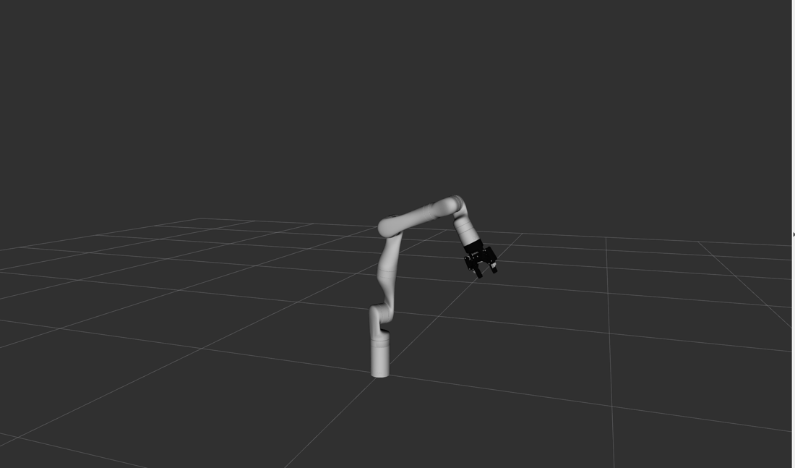

A7 · ros2_control
Start the Kinova arm with fake hardware, look at the layers that make it move, and move it with a topic and with an action. This is the last piece of ROS 2 you need before the arm itself.
1. Goal
In A6 the arm in RViz was only a picture: sliders produced joint angles and TF drew them. A real arm has motors that must be commanded and sensors that must be read, at a steady rate, safely. ROS 2 has a framework for that, ros2_control, and the Kinova driver is built on it. The same framework works with mock (fake) hardware, which is how this course drives the arm without a real one. This lesson only looks at the framework and uses it from the command line. You write no code. In Part B your programs will do what you do by hand here.
At the end of this lesson you will have:
- started the arm with the same launch file the real arm uses, with fake hardware,
- listed its controllers, hardware components and interfaces, and read the file that configures them,
- read the joint angles from
/joint_statesat 1000 Hz, - moved the arm by publishing a trajectory to a topic, and by sending the same kind of goal to an action (A3) with feedback,
- switched from one controller to another and seen which one owns the joints.
2. Concepts
The layers
/joint_states. The dashed box is what the controller manager runs, in a loop.- A hardware component is the part that talks to the actual device: it reads sensor values and writes commands. For the real arm it is a Kinova driver. For the digital twin it is
mock_components/GenericSystem, which simply pretends: whatever position you command is the position it reports back. - It offers interfaces, named
joint/kind. A state interface is something you can read (joint_1/position,joint_1/velocity,joint_1/effort). A command interface is something you can set (joint_1/position,joint_1/velocity). - A controller is a small plugin that uses interfaces. It reads some state interfaces, decides, and writes some command interfaces. A joint trajectory controller turns a list of waypoints with times into a smooth stream of position commands. A broadcaster only reads: the
joint_state_broadcasterpublishes the state interfaces as/joint_states, the topic A6 used. - The controller manager is the node that runs everything in a loop,
update_ratetimes a second: read the hardware, update every active controller, write the commands. The rate is 1000 Hz here, so one loop takes 1 ms. - A command interface can be claimed by only one controller at a time. This is what stops two controllers from fighting over the same joint. Controllers can be active or inactive, and you switch between them while the arm runs.
Mock and real, one launch file
The Kinova launch file gen3.launch.py is the one you would use on the real arm. It has an argument use_fake_hardware: when true, it loads the mock component in place of the Kinova driver. Everything above the hardware (controllers, topics, actions, RViz, and later MoveIt) is identical. That is why a program that works on the twin works on the real arm. The launch file needs a robot_ip argument for the real arm; with fake hardware nothing connects to it, so any text will do.
3. Do it
All commands run in a container shellterminal set up for ROS 2 (A0, step 5), in the ros2-tutorial folder. You need two terminals, T1 and T2. There is no code to write, so the Python / C++ switch has no effect here.
-
Start the arm with fake hardware
host T1: open a terminal in the
ros2-tutorialfolder and enter a container:docker/run_ros2.shhost T1: open a terminal in the
ros2-tutorialfolder.container
ros2 launch kortex_bringup gen3.launch.py robot_ip:=yyy.yyy.yyy.yyy use_fake_hardware:=true gripper:=robotiq_2f_85Lots of log lines scroll by, and RViz opens with the arm standing straight up. Near the end you should see the broadcaster start:
[ros2_control_node-1] [INFO] [1794059325.702188617] [controller_manager]: Activating controllers: [ joint_state_broadcaster ] [ros2_control_node-1] [INFO] [1794059325.702576566] [controller_manager]: Successfully switched controllers! [spawner-3] [INFO] [1794059325.704025324] [spawner_joint_state_broadcaster]: Configured and activated joint_state_broadcaster
Leave it running.
gripper:=robotiq_2f_85adds the gripper, as in A6.host T2: open a second terminal and enter a container:
docker/run_ros2.shhost T2: open a second terminal in the
ros2-tutorialfolder. -
Nodes and controllers
container In T2:
ros2 node list ros2 control list_controllers/controller_manager /joint_group_velocity_controller /joint_state_broadcaster /joint_trajectory_controller /kortexmultiinterfacehardware /robot_state_publisher /robotiq_gripper_controller /robotiqgripperhardwareinterface /twist_controller twist_controller picknik_twist_controller/PicknikTwistController inactive joint_trajectory_controller joint_trajectory_controller/JointTrajectoryController active robotiq_gripper_controller parallel_gripper_action_controller/GripperActionController active joint_state_broadcaster joint_state_broadcaster/JointStateBroadcaster active joint_group_velocity_controller velocity_controllers/JointGroupVelocityController inactive
(The blank line is only here to separate the two commands. The order of the nodes and controllers may differ.) Every controller is a node. The list says, for each one, its type (the plugin) and its state. Five are loaded: three are active and two are inactive:
Controller What it does State joint_state_broadcasterpublishes /joint_statesactive joint_trajectory_controllermoves the 7 joints along a trajectory (position commands) active robotiq_gripper_controlleropens and closes the gripper active joint_group_velocity_controllertakes one velocity per joint inactive twist_controllertakes a velocity of the hand in space (used for servoing) inactive Two entries in the node list are not controllers:
/kortexmultiinterfacehardwareand/robotiqgripperhardwareinterface. Each is a hardware component, the layer below the controllers (see the diagram above): the first stands for the arm's seven joints, the second for the gripper. They are named after the Kinova driver and the Robotiq gripper driver they stand in for, even though here both are fakes. Step 3 shows them. -
Hardware and interfaces
ros2 control list_hardware_componentsThe output is long; these are the lines that matter, for the arm component (the other one is the gripper):
Hardware Component 2 name: KortexMultiInterfaceHardware type: system plugin name: mock_components/GenericSystem state: id=3 label=active read/write rate: 1000 Hz command interfaces joint_7/position [available] [claimed] joint_5/velocity [available] [unclaimed] joint_5/position [available] [claimed] joint_1/position [available] [claimed] joint_1/velocity [available] [unclaimed] ...
This is the layer of the picture above. The name is that of the Kinova driver, but the plugin is
mock_components/GenericSystem: the fake one. The arm component offers apositionand avelocitycommand interface for each joint (the lines are not in order).[claimed]means a controller is using it: the trajectory controller has claimed everypositioninterface, and thevelocityones are[unclaimed]because the velocity controller is inactive. Step 8 changes that.ros2 control list_hardware_interfaceslists all command and state interfaces in one go, andros2 control list_controllers -vshows per controller which ones it claims. -
The configuration file
Which controllers exist, and how each one is set, is in a YAML file, in the same format as the parameter files of A4 (the controllers are nodes, and these are their parameters). Print the one for the 7-DoF arm:
cat $(ros2 pkg prefix --share kortex_description)/arms/gen3/7dof/config/ros2_controllers.yamlThe start of it:
controller_manager: ros__parameters: update_rate: 1000 # Hz joint_state_broadcaster: type: joint_state_broadcaster/JointStateBroadcaster joint_trajectory_controller: type: joint_trajectory_controller/JointTrajectoryController ... joint_trajectory_controller: ros__parameters: joints: - joint_1 ... - joint_7 command_interfaces: - position state_interfaces: - position - velocity state_publish_rate: 100.0 action_monitor_rate: 20.0The top block is the controller manager: the loop rate, and the name and
typeof each controller it can load. Then each controller has its own block. For the trajectory controller: whichjointsit moves, which interfaces it commands (position) and reads, and how often it publishes its state (100 Hz) and its action feedback (20 Hz; you will see that in step 7). This is the only file that says how the arm is controlled. -
Read the joint angles
ros2 topic echo /joint_states --once --field position ros2 topic hz /joint_statesarray('d', [0.0, 0.0, 0.0, 0.0, 0.0, 0.0, 0.0, -0.7929, 0.7929, 0.7929, 0.7929, -0.7929, -0.7929]) --- average rate: 1000.093 min: 0.001s max: 0.001s std dev: 0.00001s window: 1002 average rate: 1000.047 min: 0.001s max: 0.001s std dev: 0.00001s window: 2003The first seven numbers are the arm joints,
joint_1tojoint_7, in radians; the other six belong to the joints of the gripper (ros2 topic echo /joint_states --onceshows the names). Stophzwith Ctrl+C. The topic is published at 1000 Hz, once per control loop. (echomay print a "message was lost" warning: a terminal cannot keep up with 1000 messages a second. The robot does not care.)robot_state_publisher, from A6, turns these angles into the frames you saw. -
Move the arm: a trajectory on a topic
The trajectory controller listens on
/joint_trajectory_controller/joint_trajectory, typetrajectory_msgs/msg/JointTrajectory. A trajectory is a list of points. Each point haspositions(one angle per joint, in the order ofjoint_names) and atime_from_start: when the arm should be there. Send one point, 4 seconds away:ros2 topic pub --once /joint_trajectory_controller/joint_trajectory trajectory_msgs/msg/JointTrajectory "{joint_names: [joint_1, joint_2, joint_3, joint_4, joint_5, joint_6, joint_7], points: [{positions: [0.5, 0.5, 0.0, -1.0, 0.0, 0.5, 0.0], time_from_start: {sec: 4}}]}"The arm in RViz moves smoothly to a bent pose and stops after four seconds. Look at the angles, and then at the hand with the tool of A6, once the move is over:
ros2 topic echo /joint_states --once --field position ros2 run tf2_ros tf2_echo base_link end_effector_linkarray('d', [0.5, 0.5, 0.0, -1.0, 0.0, 0.5, 0.0, -0.7929, 0.7929, 0.7929, 0.7929, -0.7929, -0.7929]) --- At time ... - Translation: [0.033, -0.046, 1.097](Stop
tf2_echowith Ctrl+C.) The joint angles are exactly the ones commanded, as the fake hardware promises, and the hand is no longer at z = 1.187 as in A6, but at 1.097: you moved it. The whole chain of this course is in this one step: a command to a controller, the mock hardware,/joint_states,robot_state_publisher, TF, RViz. The picture is what you should see:
The arm after the trajectory above. (The fake arm lives in the same RViz as in A6, started this time by gen3.launch.py.)Careful with real arms A topic has no answer: if the angles are wrong or too far away, the controller simply tries. On the real arm you would never send a big jump like this without checking. That is one reason to use an action, next, and later MoveIt, which plans a path that avoids collisions. -
Move the arm: the same, as an action
The same controller also offers an action (A3):
/joint_trajectory_controller/follow_joint_trajectory, typecontrol_msgs/action/FollowJointTrajectory. Its goal contains the same trajectory. You get an accepted/rejected answer, feedback while it moves and a result when it ends. Look at it, then send a goal (send the arm back to zero first, if you want to see it move, with the same topic command andpositionsall0.0):ros2 action info /joint_trajectory_controller/follow_joint_trajectory ros2 action send_goal --feedback /joint_trajectory_controller/follow_joint_trajectory control_msgs/action/FollowJointTrajectory "{trajectory: {joint_names: [joint_1, joint_2, joint_3, joint_4, joint_5, joint_6, joint_7], points: [{positions: [0.5, 0.5, 0.0, -1.0, 0.0, 0.5, 0.0], time_from_start: {sec: 3}}]}}"Action: /joint_trajectory_controller/follow_joint_trajectory Action clients: 0 Action servers: 1 /joint_trajectory_controller ... Goal accepted with ID: a4304bddd1a64d52be92d6533a1efff6 Feedback: header: stamp: sec: 1794059485 nanosec: 281694761 frame_id: '' joint_names: - joint_1 ... desired: positions: - 0.008166102666666666 - 0.008166102666666666 - 0.0 - -0.016332205333333332 ... velocities: - 0.16666666666666666 ... (many more feedback messages) Result: error_code: 0 error_string: Goal successfully reached! Goal finished with status: SUCCEEDED(The goal is printed back first; we cut it, and the feedback, to the parts that matter. The goal ID is different every time.) The feedback comes 20 times a second (we counted 60 messages for a 3 s goal, which is the
action_monitor_rateof 20 Hz of step 4) and compares thedesiredpose with theactualone (and theirerror). At the start, joint_1 is asked to be at 0.008 rad moving at 0.167 rad/s: that is 0.5 rad in 3 s, 0.5 / 3 = 0.167. The result sayserror_code: 0andSUCCEEDED. A program can wait for it, as in A3, and then do the next thing. This is what MoveIt will use in Part B. -
Switch controllers
Look at who owns
joint_1now:ros2 control list_hardware_interfaces | grep -E "joint_1/(position|velocity) "joint_1/position [available] [claimed] joint_1/velocity [available] [unclaimed]
(This command prints the state interfaces below the command interfaces too, which our
grephides: they have no[claimed]mark, as a state can be read by anyone.) Now stop the trajectory controller and start the velocity controller, and look again:ros2 control switch_controllers --deactivate joint_trajectory_controller --activate joint_group_velocity_controller ros2 control list_hardware_interfaces | grep -E "joint_1/(position|velocity) "Successfully switched controllers! Deactivated controllers: [ joint_trajectory_controller ] Activated controllers: [ joint_group_velocity_controller ] joint_1/position [available] [unclaimed] joint_1/velocity [available] [claimed]
The ownership moved:
joint_1is now commanded in velocity, by another controller, and the trajectory controller is no longer in charge of the arm. One owner per command interface. (The mock arm of this course does not move under the velocity controller, so we only look at who owns what. The switching is the same on the real arm.) Switch back, so that the next lesson finds the arm as it started:ros2 control switch_controllers --deactivate joint_group_velocity_controller --activate joint_trajectory_controllerSuccessfully switched controllers! Deactivated controllers: [ joint_group_velocity_controller ] Activated controllers: [ joint_trajectory_controller ]
Stop the launch in T1 with Ctrl+C when you are done.
4. Check
You are done when:
ros2 control list_controllersshowsjoint_trajectory_controllerandjoint_state_broadcasterasactive,list_hardware_componentsshowsmock_components/GenericSystem,- the arm moves in RViz after your topic command, and
/joint_statesshows the angles you sent, - the action ends with
SUCCEEDED.
5. Exercise
Send the arm back to the straight-up pose, all seven joints at 0, in 2 seconds, with a topic command. Before you run it, use A6 to predict where the hand will be. Then check with tf2_echo base_link end_effector_link.
Answer
ros2 topic pub --once /joint_trajectory_controller/joint_trajectory trajectory_msgs/msg/JointTrajectory "{joint_names: [joint_1, joint_2, joint_3, joint_4, joint_5, joint_6, joint_7], points: [{positions: [0, 0, 0, 0, 0, 0, 0], time_from_start: {sec: 2}}]}"
ros2 run tf2_ros tf2_echo base_link end_effector_link- Translation: [-0.000, -0.025, 1.187]
All joints at zero is the pose of A6: the hand at (0, −0.025, 1.187) in base_link, straight up. (We ran this after the move of step 6, and waited 3 s before asking.)
6. Recap
- ros2_control separates hardware components (read sensors, write commands) from controllers (decide commands), run by the controller manager at
update_rate(1000 Hz). - Hardware offers state interfaces (read) and command interfaces (write), named
joint/kind. A command interface is claimed by one active controller at a time. joint_state_broadcasterpublishes/joint_states;joint_trajectory_controllermoves the joints from a topic (JointTrajectory) or an action (FollowJointTrajectory, with feedback and result).use_fake_hardware:=trueswaps the Kinova driver formock_components/GenericSystem. Everything above it is the same as on the real arm.ros2 control list_controllers | list_hardware_components | list_hardware_interfaces | switch_controllersinspect and change it; a YAML file (ros2_controllers.yaml) configures the controllers.